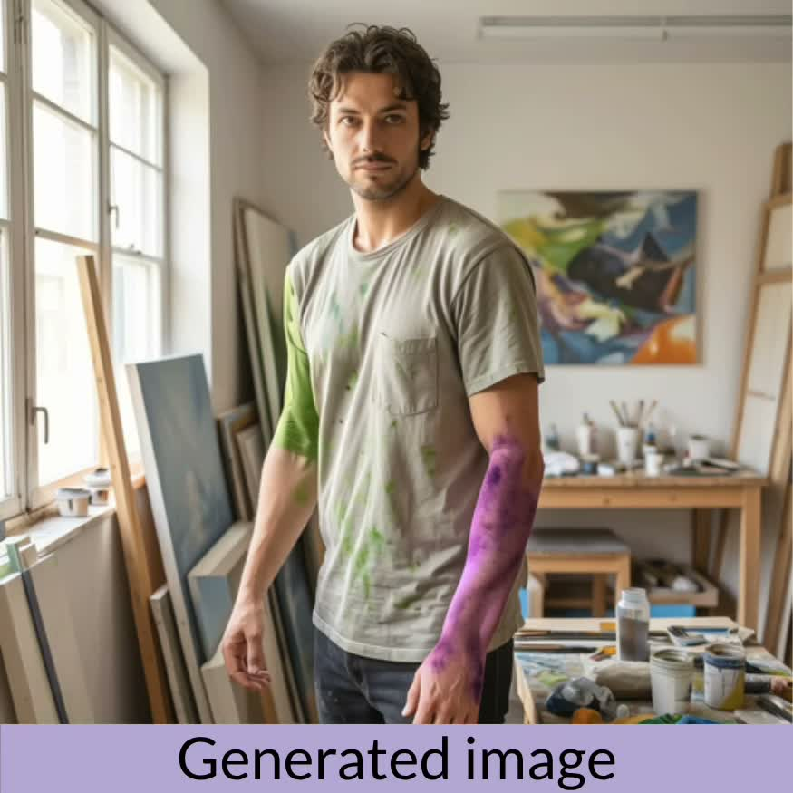
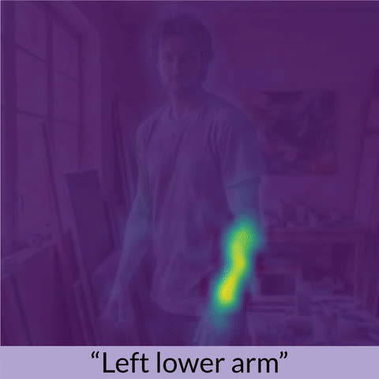

PartConcepts: A Unified Mechanism for Fine-Grained Part-Level Localization and Generation
Under peer review, selected for presentation at CVPR 2026
GCV workshop
Finetuning a T2I diffusion model's text encoder for strong attention localization of part-level concepts (e.g., 'left-front leg'); this leads to accurate part-level instance segmentation and generative control.